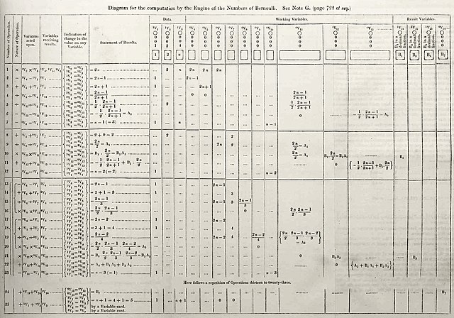
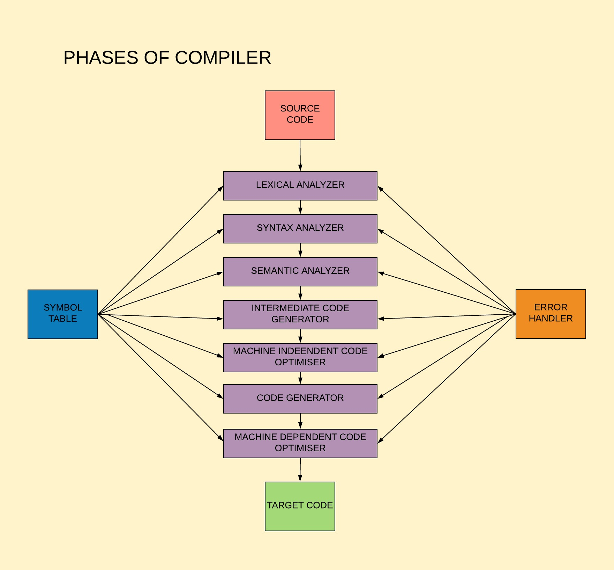
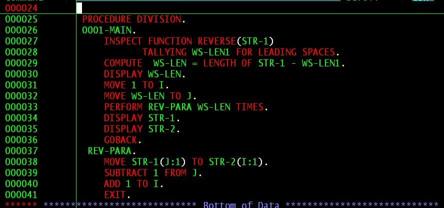

Ton repaire interactif entre informatique et logique
Bienvenue sur Informe-toit
Informe-toit est un site interactif et éducatif
développé dans le cadre d'un projet de stage universitaire,
conçu pour mettre en lumière les grandes figures qui ont marqué
l'histoire de l'informatique tout en démontrant la maîtrise de
technologies web modernes.
Contenu du site
De Ada Lovelace, première programmeuse de
l'histoire, à Linus Torvalds, créateur de
Linux, en passant par le visionnaire
Alan Turing et la pionnière
Grace Hopper, découvrez les portraits détaillés
de ceux et celles qui ont révolutionné notre monde numérique.
Le site propose également une
section quiz interactive avec des jeux de
logique et des questions de culture générale mêlant
informatique, mathématiques et raisonnement logique. Ces défis
sont organisés par niveaux de difficulté pour s'adapter à tous
les profils, du débutant à l'expert.
Objectifs pédagogiques
Notre mission est de rendre l'informatique accessible et
passionnante à travers des contenus riches et variés : portraits
inspirants, anecdotes historiques, explications techniques
vulgarisées, et apprentissage ludique par le jeu.
Contexte technique du projet
Ce site constitue un projet de démonstration des compétences
acquises en développement web, réalisé en binôme dans un
environnement professionnel simulé. Il met en œuvre un ensemble
de technologies et méthodologies modernes :
Technologies web utilisées
HTML5
: Structure sémantique et accessible du contenu
CSS3
: Mise en forme responsive et animations
JavaScript : Interactivité, logique des quiz
et expérience utilisateur dynamique
PHP
: Traitement côté serveur et gestion des données
MySQL
: Base de données pour le stockage des questions
Outils de développement et déploiement
Docker : Containerisation pour un
environnement de développement reproductible
GitHub : Gestion de versions collaborative et
intégration continue
VMware :
Virtualisation pour isoler l'environnement de développement
Travail collaboratif : Développement en
binôme avec méthodologies agiles
Conformité aux normes
Accessibilité numérique (RGAA)
Le site a été conçu dans le respect des
standards d’accessibilité (RGAA), avec une
navigation clavier, une structure HTML sémantique et des
contrastes adaptés, pour garantir une expérience inclusive.
Protection des données personnelles
Aucune donnée personnelle n’est collectée ni stockée. Le site
respecte les principes du RGPD et de la
CNIL en assurant une
navigation anonyme sans traçage ni cookies
intrusifs.
Compétences développées
Ce projet illustre la maîtrise de compétences transversales
essentielles au développement web professionnel : conception
d'interfaces accessibles, programmation full-stack, gestion de
bases de données, déploiement containerisé, collaboration via
outils de versioning, et respect des contraintes légales et
techniques.
Explorez, apprenez et testez vos connaissances
tout en découvrant les héros méconnus qui ont façonné l'ère
numérique !
Augusta Ada King, comtesse de Lovelace, est souvent reconnue
comme la première programmeuse informatique de l'histoire. Fille
du poète Lord Byron, elle a été fascinée dès son plus jeune âge
par les mathématiques et les sciences. Elle collabora avec le
mathématicien Charles Babbage sur sa machine analytique, un
ancêtre théorique de l'ordinateur.
Ses travaux révolutionnaires
En 1843, Ada Lovelace traduit et annote un mémoire du
mathématicien italien Luigi Menabrea sur la machine
analytique de Babbage. Ses notes, plus longues que l'article
original, révèlent une compréhension exceptionnelle des
capacités de cette machine.
Cette machine révolutionnaire, bien qu'elle n'ait jamais été
entièrement construite, était conçue pour effectuer des
calculs complexes de manière automatique. Ada comprit
immédiatement le potentiel de cette invention qui dépassait
le simple calcul arithmétique.
La machine analytique de Charles Babbage

L'algorithme des nombres de Bernoulli d'Ada Lovelace
Dans la célèbre "Note G", elle développe un algorithme
détaillé pour calculer les nombres de Bernoulli - une
séquence mathématique complexe utilisée en théorie des
nombres. Ce qui distingue Ada, ce sont ses notes détaillées
dans lesquelles elle propose une méthode pour faire calculer
à la machine une suite de nombres.
C'est ce qui est considéré comme le tout premier algorithme
destiné à être exécuté par une machine. Elle voyait au-delà
du simple calcul, anticipant les possibilités de traitement
de symboles et de sons — une vision très en avance sur son
temps.
Une vision futuriste
Ada Lovelace ne se contentait pas de comprendre la technologie
de son époque : elle en imaginait les développements futurs.
Elle théorisait que les machines pourraient un jour composer de
la musique, créer de l'art et manipuler des symboles selon des
règles logiques. Cette intuition remarquable préfigurait
l'intelligence artificielle et l'informatique moderne d'une
manière que même Babbage n'avait pas entrevue.
Elle fut également la première à comprendre la distinction
fondamentale entre données et instructions, concept central de
la programmation moderne. Dans ses écrits, elle souligne que la
machine analytique pourrait traiter tout ce qui peut être
exprimé en symboles logiques, posant ainsi les bases
conceptuelles de l'informatique théorique.
Principales contributions :
Premier algorithme informatique de l'histoire (calcul des
nombres de Bernoulli)
Traduction et annotation révolutionnaires du mémoire de
Menabrea (1843)
Conceptualisation de la programmation en boucles et
sous-routines
Vision prophétique des applications non-numériques des
ordinateurs
Distinction pionnière entre matériel et logiciel
Travail de vulgarisation scientifique sur les machines
computationnelles
Un héritage durable
Bien que la machine analytique de Babbage n'ait jamais été
construite de son vivant, les travaux d'Ada Lovelace ont jeté
les bases conceptuelles de l'informatique moderne. Son nom est
aujourd'hui honoré dans le langage de programmation
"Ada", développé par le département de la
Défense américain, et ses contributions sont célébrées chaque
année lors de l'Ada Lovelace Day, qui met
à l'honneur les femmes en sciences et technologies.
"L'imagination est la faculté de découvrir des merveilles à
travers les nombres."
Alan Turing est l'un des plus grands mathématiciens et logiciens
du XXe siècle,
largement considéré comme le père de l'informatique moderne. Il
a posé les bases théoriques de l'ordinateur avec sa célèbre
"machine de Turing", un modèle abstrait capable de simuler
n'importe quel algorithme.
La machine de Turing : fondement de l'informatique
En 1936, alors qu'il n'a que 24 ans, Turing publie un
article révolutionnaire intitulé
"On Computable Numbers". Il y décrit
un dispositif théorique, aujourd'hui appelé "machine de
Turing", composé d'un ruban infini divisé en cases et d'une
tête de lecture capable de lire, écrire et se déplacer selon
des règles précises. Cette abstraction mathématique définit
ce qu'est un calcul et établit les limites théoriques de ce
qui peut être calculé.
Ce concept fondamental démontre qu'une machine universelle
peut simuler n'importe quelle autre machine de Turing,
posant ainsi les bases de l'ordinateur programmable moderne.
Tous nos ordinateurs actuels sont, en essence, des
implémentations physiques de ce modèle théorique.
Schéma simplifié de la machine de Turing
Bletchley Park et la cryptanalyse
La machine Bombe utilisée à Bletchley Park
Pendant la Seconde Guerre mondiale, Turing rejoint l'équipe
secrète de Bletchley Park, le centre
de décryptage britannique. Il dirige les efforts pour percer
les secrets d'Enigma, la machine de
chiffrement allemande considérée comme inviolable. Son génie
réside dans l'amélioration de la "Bombe", une machine
électromécanique capable de tester des milliers de
combinaisons par jour.
Grâce à ses innovations, notamment l'exploitation des
faiblesses humaines dans l'utilisation d'Enigma et le
développement de méthodes statistiques avancées, les Alliés
parviennent à lire une grande partie des communications
nazies. Les historiens estiment que ce travail a raccourci
la guerre de deux à quatre ans, sauvant potentiellement des
millions de vies.
Pionnier de l'intelligence artificielle
Dès 1947, Turing s'intéresse à ce qu'il appelle les "machines
intelligentes". Dans son célèbre article de 1950
"Computing Machinery and Intelligence",
il propose ce qui deviendra le "test de Turing" : si un
interrogateur humain ne peut distinguer les réponses d'une
machine de celles d'un humain lors d'une conversation, alors
cette machine peut être considérée comme intelligente.
Il anticipe les objections philosophiques à l'intelligence
artificielle et développe des arguments sur la possibilité pour
les machines de penser, de créer et d'apprendre. Ses réflexions
sur les réseaux neuronaux artificiels et l'apprentissage
automatique précèdent de plusieurs décennies les développements
actuels de l'IA.
Contributions mathématiques multiples
Au-delà de l'informatique, Turing apporte des contributions
majeures à d'autres domaines. Ses travaux sur la morphogenèse
(formation des structures biologiques) établissent les bases
mathématiques de la biologie du développement. Il développe des
équations différentielles expliquant comment les motifs naturels
- rayures du zèbre, taches du léopard - peuvent émerger
spontanément.
En logique mathématique, il résout des problèmes fondamentaux
liés au "problème de l'arrêt" (décidabilité), démontrant qu'il
existe des questions mathématiques pour lesquelles aucun
algorithme ne peut fournir de réponse universelle.
Malgré ses accomplissements extraordinaires, il fut persécuté
pour son homosexualité, alors illégale au Royaume-Uni. Condamné
en 1952, il subit un traitement hormonal forcé plutôt que la
prison. Il mourut dans des circonstances tragiques le
, officiellement
par empoisonnement au cyanure, mais son héritage scientifique
est immense.
Principales contributions :
Conception de la machine de Turing, modèle théorique de
l'ordinateur
Décryptage des codes Enigma et
contribution décisive à la victoire alliée
Création du test de Turing et fondation de l'intelligence
artificielle
Travaux pionniers sur la morphogenèse et les systèmes
biologiques
Résolution de problèmes fondamentaux en logique mathématique
Développement des premiers programmes informatiques au
NPL
Reconnaissance posthume
Le génie de Turing n'a été pleinement reconnu qu'après sa mort.
En 2009, le Premier ministre britannique Gordon Brown présente
des excuses officielles pour le traitement injuste qu'il a subi.
En 2013, la reine Élisabeth II lui
accorde un pardon royal posthume. Le prix Turing, équivalent du
prix Nobel en informatique, porte son nom depuis 1966.
"Nous ne pouvons jamais prévoir ce que fera une machine. C'est
ce qui les rend si fascinantes."
Linus Torvalds
Métier(s) : Ingénieur logiciel,
développeur, architecte système
Date de naissance :
Nationalité : Finlandaise (naturalisé
américain en 2010)
Linus Torvalds est un informaticien connu pour avoir créé le
noyau Linux en 1991. Ce noyau est devenu
le cœur de nombreux systèmes d’exploitation libres utilisés dans
le monde entier, des serveurs aux téléphones mobiles. Il est
également à l’origine de Git, un outil
révolutionnaire de gestion de versions.
La naissance de Linux : une révolution accidentelle
En 1991, alors qu’il est encore étudiant à l’Université
d’Helsinki, Torvalds commence à développer un système
d’exploitation pour son usage personnel. Le
, il publie
un message sur le forum
Usenet annonçant son projet :
I'm doing a (free) operating system (just a hobby, won't
be big and professional like GNU)...
Il publie le code de Linux 0.01 sous
licence libre
GPL,
permettant à une communauté grandissante de contribuer à son
développement. Ce modèle collaboratif devient un pilier du
mouvement open source.
Tux, la mascotte du noyau Linux
Un modèle de développement révolutionnaire
Torvalds met en place une méthode de développement collaborative
ouverte, où des milliers de développeurs peuvent proposer des
modifications. Il adopte une stratégie dite
release early, release often, favorisant une
amélioration continue du code.
Il agit comme "dictateur bienveillant", validant les
contributions intégrées au noyau principal. Ce mode de
gouvernance assure la cohérence et la robustesse du projet Linux
depuis plus de trois décennies.
Impact technologique mondial
Aujourd’hui, le noyau Linux est présent dans plus de 70 %
des serveurs web, tous les supercalculateurs du Top500, et dans
plus de 2,5 milliards d’appareils Android. Il est utilisé
dans les infrastructures critiques, les objets connectés, et les
voitures autonomes.
Grâce à sa modularité et sa fiabilité, Linux est au cœur
d’écosystèmes comme Debian,
Ubuntu, Red Hat ou
encore Android.
Git : révolutionner la gestion de versions
Logo de Git, système de gestion de versions
En 2005, pour gérer efficacement le développement du noyau
Linux, Torvalds crée Git, un système
de contrôle de versions distribué. Il permet à chaque
développeur de travailler indépendamment tout en assurant la
traçabilité et la fusion des contributions.
Git devient l’outil incontournable du développement logiciel
moderne, utilisé par des millions de projets à travers des
plateformes comme GitHub,
GitLab ou
Bitbucket.
Philosophie pragmatique du logiciel libre
Contrairement à Richard Stallman, Torvalds adopte une approche
plus pragmatique de l’open source. Pour
lui, la qualité logicielle découle de la transparence et de la
collaboration plus que d’une posture idéologique.
Cette vision a permis à de grandes entreprises comme Google,
Facebook ou Tesla de s’impliquer dans des projets libres,
démontrant la viabilité économique de ce modèle.
Principales contributions :
Création du noyau Linux et du modèle de
développement communautaire
Conception de Git, système de gestion
de versions distribué
Promotion du logiciel libre comme
modèle de développement efficace
Influence durable sur l’infrastructure mondiale d’internet et
des systèmes embarqués
Reconnaissance et héritage
Linus Torvalds a reçu de nombreuses distinctions, dont le prix
Millennium Technology Prize en 2012. Il
est considéré comme l’un des informaticiens les plus influents
de notre époque, ayant changé durablement la façon dont les
logiciels sont conçus et partagés.
"Talk is cheap. Show me the code."
Grace Hopper
Métier(s) : Informaticienne, amirale de
la marine, enseignante
Date de naissance :
Date de décès :
Grade militaire : Amirale (Rear Admiral)
Surnoms :Amazing Grace,
Grandma COBOL
Grace Murray Hopper était une informaticienne et amirale de la
marine américaine, pionnière de la programmation informatique.
Elle fut l'une des premières programmeuses du
Harvard Mark I, un des tout premiers
ordinateurs électromécaniques, et est surtout connue pour avoir
développé le premier compilateur, rendant possible les langages
de programmation proches du langage humain.
Les débuts avec Harvard Mark I
En 1944, Grace Hopper rejoint l'équipe du professeur Howard
Aiken à l'Université Harvard pour travailler sur le
Mark I, un calculateur électromécanique
de 17 mètres de long pesant 5 tonnes. Elle devient rapidement
l'une des principales programmeuses de cette machine
révolutionnaire, développant des sous-routines et des programmes
pour des calculs balistiques destinés à la marine.
Son travail sur le Mark I lui permet de
maîtriser les subtilités de la programmation en langage machine
et de comprendre les défis fondamentaux de l'informatique
naissante. Elle rédige le premier manuel d'utilisation de
l'ordinateur, établissant les bases de la documentation
technique moderne.
L'invention révolutionnaire du compilateur
En 1947, travaillant pour la société
Eckert-Mauchly Computer Corporation,
Hopper développe le concept révolutionnaire du compilateur.
Frustrée par la complexité de la programmation en code
machine, elle imagine un programme capable de traduire
automatiquement des instructions écrites dans un langage
proche de l'anglais en code machine.
Son premier compilateur, l'A-0 System
(1951), permet aux programmeurs d'écrire des programmes en
utilisant des mots anglais plutôt que des séquences de
chiffres binaires. Cette innovation révolutionnaire ouvre la
voie à tous les langages de programmation modernes. Elle
développe ensuite l'A-1 et l'A-2, améliorant constamment les capacités de compilation.

Concept du compilateur A-0, traduisant le code en
instructions machine.
COBOL : démocratiser la programmation

Extrait de code COBOL, conçu pour être lisible et destiné
aux applications commerciales.
En 1959, Hopper dirige le comité qui développe
COBOL, un langage de programmation destiné aux applications
commerciales. Sa vision : créer un langage si proche de
l'anglais que les gestionnaires d'entreprise pourraient
comprendre et même écrire des programmes.
COBOL révolutionne l'informatique de
gestion avec sa syntaxe explicite :
ADD SALARY TO TOTAL-PAYROLL plutôt
que des codes cryptiques. Le langage devient rapidement le
standard pour les applications bancaires, financières et
administratives. Encore aujourd'hui, plus de 60 ans après sa
création, COBOL fait fonctionner 95%
des distributeurs automatiques et traite des trillions de
dollars de transactions quotidiennes.
La légende du premier "bug"
Le ,
travaillant sur le Harvard Mark II, Grace
Hopper découvre qu'un papillon de nuit coincé dans un relais
électromécanique cause un dysfonctionnement. Elle colle
soigneusement l'insecte dans le carnet de bord avec la note :
First actual case of bug being found.
Bien qu'elle n'ait pas inventé le terme "bug" (utilisé depuis le
XIXe siècle
pour désigner des défauts techniques), cet incident popularise
l'expression dans le domaine informatique. Le carnet de bord
original est conservé au
Smithsonian National Museum of American History.
Innovations techniques et conceptuelles
Au-delà du compilateur et de COBOL,
Hopper développe de nombreuses innovations techniques. Elle
conçoit des méthodes de validation automatique des programmes,
des systèmes de gestion d'erreurs et des techniques
d'optimisation de code. Ses travaux sur la standardisation des
langages de programmation établissent les bases de la
portabilité logicielle.
Elle invente également le concept de "sous-routine"
réutilisable, permettant aux programmeurs de créer des
bibliothèques de fonctions. Cette approche modulaire
révolutionne l'efficacité du développement logiciel et influence
l'architecture des programmes modernes.
Carrière militaire exceptionnelle
Parallèlement à ses contributions techniques, Hopper mène une
carrière militaire remarquable. Recrutée dans la
WAVES (femmes réservistes de la marine)
en 1943, elle gravit les échelons jusqu'au grade d'amirale. À 79
ans, elle devient la doyenne de la marine américaine en service
actif.
Son rôle dans la marine ne se limite pas à la technique : elle
forme des milliers d'officiers à l'informatique, établit des
standards de sécurité pour les systèmes militaires et conseille
le Pentagone sur l'évolution technologique. Sa vision
stratégique influence la modernisation informatique de l'armée
américaine.
Pédagogie et vulgarisation
Hopper excelle dans la transmission du savoir. Ses conférences,
mêlant rigueur technique et humour, démystifient l'informatique
auprès du grand public. Elle utilise des analogies marquantes :
pour expliquer la nanoseconde, elle montre un fil de 30
centimètres représentant la distance parcourue par la lumière en
une nanoseconde.
Elle encourage particulièrement les femmes à s'orienter vers
l'informatique, défendant une approche inclusive bien avant que
cette question ne devienne centrale. Ses mentorats inspirent une
génération de femmes ingénieures et informaticiennes.
Principales contributions :
Développement du premier compilateur informatique (A-0 System, 1951)
Co-création et promotion du langage
COBOL (1959)
Programmation pionnière sur
Harvard Mark I et
Mark II
Invention des sous-routines réutilisables et de la
programmation modulaire
Standardisation des langages de programmation et portabilité
logicielle
Formation de milliers d'informaticiens dans la marine
américaine
Vulgarisation et démocratisation de l'informatique
Pionnier de la documentation technique et des manuels
d'utilisation
Reconnaissance et héritage
Grace Hopper reçoit de nombreuses distinctions : la
National Medal of Technology (1991), plus
de 40 doctorats honorifiques, et devient la première femme
nommée Distinguished Fellow de la
British Computer Society. Un destroyer de
la marine américaine, l'USS Hopper, porte
son nom.
La conférence Grace Hopper Celebration,
plus grand rassemblement mondial de femmes techniciennes,
perpétue son héritage. Son influence dépasse la technique : elle
a prouvé que l'innovation naît souvent de la remise en question
des pratiques établies.
"The most dangerous phrase in the language is: 'We've always
done it this way.'"
(La phrase la plus dangereuse qui soit est : "Nous avons
toujours fait comme ça.")
Pour toute question, suggestion ou collaboration, n'hésitez pas à
nous contacter :